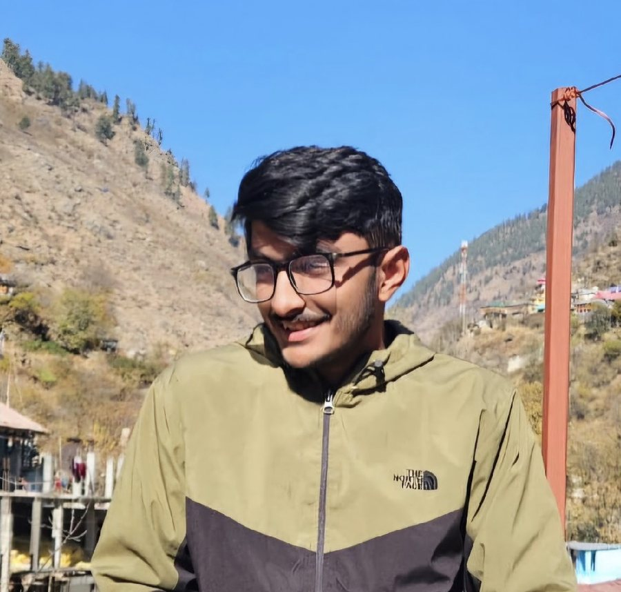

About
The person
behind the words
Sujal Negi, writing under the pen name alfaazsujalke, is a young poet and writer whose work explores love, separation, spirituality, and the deeper nuances of human emotions. He was ranked 88th among the Top 100 poets in India in the 21st National Poetry Contest organized by S7 Poetry and was among the Top 5 winners of IFH’s India’s Aspiring Writers Award 2024. His works have been published in more than 10 poetry anthologies. Through his writing, he seeks to give voice to emotions that often remain unspoken and are quietly cherished within the human heart.
सुजल नेगी, ‘alfaazsujalke’ के नाम से लेखन करने वाले युवा कवि एवं लेखक हैं। उनकी लेखनी में प्रेम, विरह, आध्यात्मिकता और मानवीय संवेदनाओं की गहरी अभिव्यक्ति देखने को मिलती है। उन्हें S7 Poetry द्वारा आयोजित 21वीं नेशनल पोएट्री कॉन्टेस्ट में भारत के शीर्ष 100 कवियों में 88वाँ स्थान प्राप्त हुआ तथा IFH के India’s Aspiring Writers Award 2024 में वे शीर्ष 5 विजेताओं में शामिल रहे। उनकी रचनाएँ अब तक 10 से अधिक काव्य-संकलनों में प्रकाशित हो चुकी हैं। वे शब्दों के माध्यम से उन भावनाओं को स्वर देने का प्रयास करते हैं, जिन्हें अक्सर मनुष्य अपने भीतर ही संजोए रखता है।
- Pen name
- alfaazsujalke
- Writes in
- Hindi, Urdu and English
- Roots
- District Kinnaur, Himachal Pradesh
- Studying
- B.Tech, IIIT Kurnool (expected 2027)
- Off the page
- Reading, chess, the ukulele
What made me write
When I was in 9th standard, I read a poem by my elder brother Mr. Arjun Singh Negi, titled “Meri Devi-Si Maa” (My Goddess-Like Mother). It sparked something in me, and I felt the urge to write myself. My brother became my mentor, guiding me through the world of literature and poetry.
Initially, I wrote in Hindi, but gradually, I started experimenting with English. Writing became a journey of learning, and I took part in several anthologies, publishing both Hindi and English poems. My own books are to be published soon.
Where the words come from
My inspiration is my elder brother, Mr. Arjun Singh Negi, along with the beautiful landscapes of the Himalayas and the rich culture of India.
Why I write
My long-term goal as an author is to inspire and empower those who are lost or struggling, especially young people who might be tempted by harmful influences. I want to encourage them to find their voice through writing, whether it's poetry, stories, or any other form of expression. I believe that writing can be a powerful tool for healing, self-discovery, and positive change.
“My latest ghazal expresses who I am”
ख़ामोशी के दरिया में डूबी सी इक आवाज़ हूँ
टूटे हुए अल्फ़ाज़ों से कहता हूँ अपनी बात हूँ
जो राहें तन्हा सी थीं, अब भी हैं वीरान सी
आँखों में यादों के कुछ साये लिए फिरता हूँ
दिल में दबे अरमान हैं, चेहरे पे झूठी मुस्कराहट है
उलझन भरी ज़िन्दगी में, इक पहेली सा साथ हूँ
Open this ghazal →